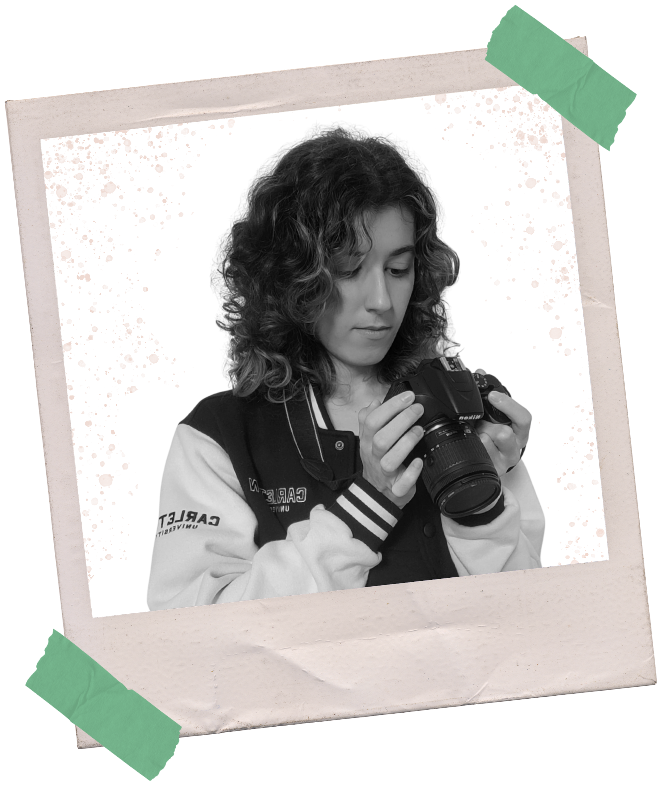
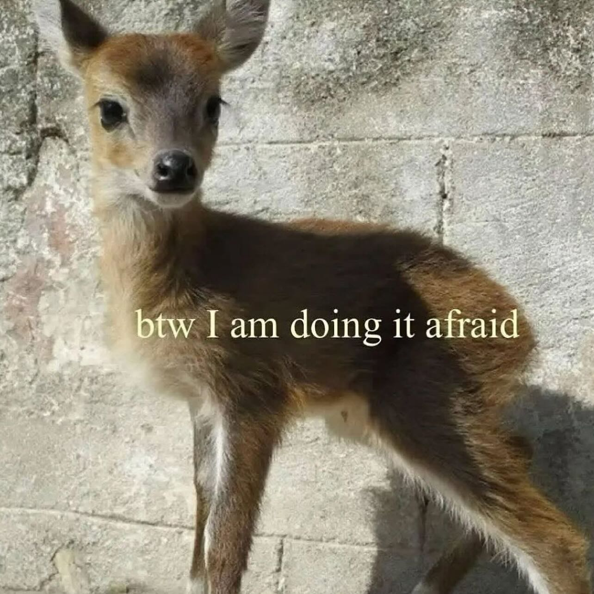

I am an Algonquin College IMD graduate (honours), and a current Carleton University Film Studies student. For years, I've been honing in my multimedia skills as build my career within the creative industry. Though I specialize in film and video production, I'm also experienced in graphic design, photography, web design, and other visual art mediums. My strengths lie in my passion, as I'm very dedicated to perfecting my craft. Feel free to reach for collaboration, or even just to say hi! I'm always excited to meet fellow creatives. :)
Plot synopsis goes here...

| • Photoshop | • Premiere Pro | • Davinci Resolve |
| • Canva & Affinity | • Adobe Audition | • After Effects |
| • Visual Studio Code | • Microsoft Office Suite | • FadeIn & Writerduet |
| • DSLR cameras (Nikon owned) | • Shotgun microphones (owned) | • Lighting equipment |